User manual - endurance race strategy, live pit wall, fuel planning and crew management
Version 2.2.23
Mullaloo Motorsport Engineering - 2026 Pietro Gambarin
November 2026
Orb - Pit Wall Strategy Manager (Orb for short) is a self-hosted race engineering application for endurance racing. One laptop runs a small server; the engineer works in a browser on that laptop, and any phone, tablet or TV on the same network can open the same screens view-only. It runs completely offline: no internet and no cloud account are needed at the track. The optional satellite view of the track map uses imagery that the laptop downloads beforehand and keeps (section 5.5). NEW
It continuously answers the questions a pit wall asks during a long race:
Orb is developed by Mullaloo Motorsport Engineering - Pietro Gambarin. It connects to the Mullaloo Motorsport Engineering devices in the car: the Agile lap timer (laps, micro-sectors, pit lane geofences, pit board messages, flags, GPS track map) and the Sentinel brake and tyre temperature and pressure monitor, with its CIRTS sensor nodes. Without them, everything can be entered by hand.
| Reader | Read first |
|---|---|
| Testers evaluating the release | Sections 1.4 (what is new), 2, 3 and 4 (install, start, guided demo), then 12 (feedback) |
| Race engineer / strategist | Everything; sections 5 to 7 in detail |
| Refuel crew chief | Section 5.7 (Fuel Plan, including the fuel stock) and 6.5 (pit stop workflow) |
| Crew members using a tablet or TV | Section 3.3 (view-only access) and 5.11 (Garage display) |
Version 2 is a redesign of the user interface of the original version 1.x, following control-room design practice (ISA-101 "high performance HMI"): calm neutral screens, colour only when something needs attention, gauges with limits instead of bare numbers, and every piece of information in exactly one place. Both versions open the same race weekend files, but only one of them can run at a time.
The application was called Pit Wall Pro2 up to 2.1.4 and Pitwall Strategy Manager from 2.2.0. From 2.2.10 it is Orb - Pit Wall Strategy Manager, at github.com/redc6t/Orb. From 2.2.9 the in-car devices are called Agile (was PLTD) and Sentinel (was BTTM). Everything saved under the old names still loads: .pitwall.json files import, the old start/stop scripts' environment variables and the simulator's --pltd, --bttm and --pitwall options still work.
The version number lives in one place (package.json); the server console and the footer at the bottom of every page show it, for example Orb - Pit Wall Strategy Manager v2.2.23 | Mullaloo Motorsport Engineering - 2026 Pietro Gambarin.
Monospace is a file, command or value you type.1h 55m, 7h 15m, and under an hour 4m 52s.| Version | Change | Section |
|---|---|---|
| 2.2.4 | New README with a guided tour; contributing guide, code of conduct, security policy, accessibility statement, issue and pull request templates. | - |
| 2.2.5 | Movable cards on the Race and Car tabs: drag a card by the grip in its header; saved per browser; Reset layout restores the default. | 5.5, 5.10 |
| 2.2.6 | stop-orb.bat stops a server or simulator left running in the background; make-demo.bat runs it first. | 3.2, 4.2 |
| 2.2.7 | Race Plan: + auto-gen debrief on every finished stint - the engineer's written recap of that stint. | 5.6 |
| 2.2.8 | Simulator: sending BOX again no longer delays the simulated stop. | 4.3 |
| 2.2.9 | PLTD renamed Agile, BTTM renamed Sentinel. Old settings and weekends load unchanged. | 1.2, 8 |
| 2.2.10 | The app is renamed Orb - Pit Wall Strategy Manager; scripts start-orb.bat / stop-orb.bat; exports are .orb.json; data folder override ORB_DATA. | 1.2, 2, 9 |
| 2.2.11 | The demo resumes from its last lap, so the time Orb was closed does not count. Old *-pitwall.bat scripts removed. | 4.1 |
| 2.2.12 | A car issue logged from the Race tab's Attention & feed card shows up there at once. | 5.5 |
| 2.2.13 | Saved plans: prepare a weekend early and start a fresh copy of it on race day. | 5.12, 6.1 |
| 2.2.14 | Fuel stock: a suggested amount to bring (Setup) and the live stock left against the fuel still needed (Fuel Plan). | 5.7, 5.13 |
| 2.2.15 | Red flag neutralises the race: the car is held in the pits until the restart; RED FLAG / RESTART calls. Scenarios follow what really happens (real flags, stops and the red park block on every bar; predicted events used up or slid forward). | 5.5, 5.8, 7.3 |
| 2.2.16 | Scenario Undo / Redo; Clone a scenario into branches (A1, A2 ...). Fixed: Save assumptions saving a plan file. | 5.8 |
| 2.2.17 | Simulator: a red flag freezes a pit stop; realistic brake and tyre cooling; real Agile live deltas and micro-sectors. | 4.3 |
| 2.2.18 | Shifts editor highlights the block happening right now and scrolls to it. | 5.9 |
| 2.2.19 | This manual, rebuilt for Orb with new screenshots; the manual source is now in the repository (docs/manual/). | - |
| 2.2.20 | Track map: the preset turns, pits and start/finish are shifted onto the Agile's reference lap, and the card says how far and how well they agree (or that they do not match). Simulator --gpsShift. | 5.5, 4.4 |
| 2.2.21 | Satellite track map with an offline tile cache on the laptop; Setup - Track map imagery with Download track tiles. | 5.5, 5.13, 6.1 |
| 2.2.22 | Collie layout rebuilt from real GNSS laps: the old preset was about 9.4 km off and turned about 80°. | 5.14 |
| 2.2.23 | The track map is turned to fit the card, with a north arrow and a North up switch. | 5.5 |
| Item | Requirement |
|---|---|
| Host computer | Windows 10/11 laptop (Linux and macOS also work). Any recent laptop is enough; the reference machine is a Lenovo P52. |
| Software | Node.js 18 or newer (LTS). Install once from nodejs.org. Nothing else: the one dependency (ws) is inside the package. |
| Browser | Any current Chrome, Edge, Firefox or Safari, on the laptop and on viewing devices. The Race tab shows its three columns side by side on screens at least 1400 px wide; narrower screens stack them. |
| Network (optional) | For viewing devices and car telemetry: all devices on the same Wi-Fi network as the laptop (at the track: the VDG / MME_AP network, 192.168.0.x). |
C:\Orb, or git clone the repository. Do not run it from inside the zip.node_modules folder is included, so no download or internet connection is needed at the track.| File / folder | Purpose |
|---|---|
start-orb.bat | Starts the server and opens the engineer screen. |
stop-orb.bat | Stops any Orb server or simulator still running in the background (only Node.js processes on Orb's ports). |
make-demo.bat | Builds the demo race weekend (section 4). |
start-simulator.bat | Starts the simulated Agile and Sentinel (section 4). |
data\ | Created on first run: race weekends, logs, saved plans, car library, logo. Back this folder up. |
rules\ | Regulation profiles (B4B Events, BEERS). |
docs\ | Screenshots and the source of this manual. |
package.json | Holds the version number shown in the console and the page footer. |
README.md | Overview, troubleshooting and the release notes. |
data folder into it. Weekends, plans, cars and logo carry over. A 2.1.x or 2.2.x data folder opens unchanged in 2.2.23; weekends saved with the PLTD/BTTM names are moved to Agile/Sentinel the first time they open.Double-click start-orb.bat. A console window titled Orb - Pit Wall Strategy Manager server opens and prints the addresses, and the browser opens the engineer screen:
Orb - Pit Wall Strategy Manager v2.2.23 - Mullaloo Motorsport Engineering - 2026 Pietro Gambarin Engineer (this laptop): http://localhost:8080 View-only devices: http://192.168.0.23:8080 Data folder: C:\Orb\data
Leave the console window open for the whole event: closing it stops the server. If the server is restarted it resumes the last race weekend automatically, with nothing lost. On macOS or Linux run npm start in the folder.
Close the console window, or press Ctrl+C in it. Every change is already saved the moment it is made; there is no "save" step. If a server keeps running in the background (closing the window or the app that started it does not always stop it, and the console then says EADDRINUSE), double-click stop-orb.bat.
| Device | Can do |
|---|---|
The host laptop (opened as localhost) | Everything. Badge in the top-right corner: ENGINEER. |
| Any other device | See every screen, run what-ifs locally, browse the log and replay. It cannot change anything (badge VIEW ONLY; the server rejects changes). |
To let a second laptop make changes, add its IP address to engineerHosts in data\settings.json and restart. The server port (default 8080) is set in the same file.
The fastest way to learn the application is the demo: a complete race weekend already six hours into a 36-hour race, with a simulated car feeding live data. Nothing in it touches your real weekends.
| Item | Demo content |
|---|---|
| Event | DEMO - BEERS 36h Collie: BEERS standing regulations V4, 36-hour race on the Collie Motorplex long circuit (2.55 km, 13 turns, anti-clockwise). |
| Team and car | Mitsukitty, 2004-2005 Mitsubishi Lancer ES/VR-X 2.0 NA (45 L primary + 30 L secondary tank, jerry cans of 20 L). |
| People | 6 drivers and 2 engineers: Mal - owner, every role; Tanna, Pat, Jared - drivers, mechanics, full fuel crew, radio (Raceceiver relay), timing; Driver4, Driver5 - drivers, full fuel crew; Pietro, Rhys - engineers: mechanic, timing, radio, race engineering. No driving, no fuel. |
| Shift plan | Drafted with Draft shifts from the plan (section 5.9): drivers rotate through drive, rest, sleep, garage and next in; the two engineers alternate in 6 h groups. |
| History | Practice session; race started 6 hours before the demo was built; two fuel stops done; Safety Car periods; car issues, a black-flag warning, an engineer off the wall for a 2 h break. Laps carry Sentinel peaks so the stint debriefs work. |
| Fuel model | Already calibrated from two brim fills (it learned about 19.6 L/h against an 18.75 L/h baseline). |
| Fuel stock NEW | No stock entered, so Setup shows the suggestion (780 L, 39 cans) and the Fuel Plan works from it. |
| Scenarios | Scenarios A-F created at the moment the demo was built; A running. |
| Devices | Pointed at the simulator: Agile at 127.0.0.1:8081, Sentinel at 127.0.0.1:8082. |
make-demo.bat again.make-demo.bat. It first runs stop-orb.bat, so an old server cannot hide the new demo, then builds the demo weekend and makes it the active weekend. It only replaces the DEMO weekend.start-orb.bat. The engineer screen opens on the Race tab.start-simulator.bat. A second console shows the simulated car: Agile sim: Orb connected, then a line per lap. Within a few seconds the Agile and Sentinel lights in the status bar turn green and the car dot starts moving on the track map.From a terminal the same steps are npm run demo, npm start and npm run sim.
The simulator pretends to be the two devices in the car, on this laptop, using the same network protocols as the real Agile and Sentinel firmware. The application cannot tell the difference.
| Behaviour | Detail |
|---|---|
| Laps | About 92 s per lap with small random variation, reported exactly like the real Agile (lap number, latched last lap time, live delta, speed, micro-sectors). |
| Track | The real Collie Motorplex long circuit (section 5.14). In the pits the car follows the real pit lane: along the lane to the pits area, into the fuel area while fuelling, then out to the pit exit. The lap is counted where the car crosses the start/finish line in the pit lane. |
| Flags and driver pace | Yellow and Safety Car slow the car at once, about 1.35x and 1.6x lap time. SAVE FUEL on the pit board adds about 1.8 s per lap, PUSH takes about 0.6 s off, until the next stop. |
| Red flag NEW | On RED the car drives slowly to the pit entry, parks at the box and only leaves when the flag goes back to GREEN. A red flag during a stop freezes it where it is (in the fuel bay if it was fuelling): no fuelling or service under red; on GREEN the stop carries on from the same point. |
| Follows the engineer | The simulated crew follows the stop handshake: it starts pouring when you press FUEL ON, fuels only if the plan or your entry says so, stops when you press FUEL STOP COMPLETED and sends the car out on PIT OUT. Untouched steps use default timings. |
| Obeys the pit board | Any pit board message containing BOX brings the car in at the end of the current lap (at least 20 s after the message; sending BOX again does not restart that delay). In the app, BOX BOX is only a driver message. A message containing NO FUEL or DRIVER makes it a stop without fuelling. |
| Pit stop sequence | PIT ENTRY (25 s) - PITS (10 s, or 3 s after FUEL ON) - FUELLING (fuel minimum + 20 s) - PITS - PIT EXIT (15 s) - RUNNING: the same geofence states the real Agile sends. |
| Driver acknowledgement | Every pit board message is "shown" on the dash and acknowledged 1.5 to 3.5 s later. |
| Live delta and micro-sectors NEW | The live delta is the real time lost to the reference lap so far this lap (it grows under a Safety Car or red flag, and shows saving or pushing); there is none in the pit lane. Micro-sectors are recorded as the car crosses each one, including the time a flag costs; nothing runs in the pit lane, and sectors before pit exit on an out-lap stay grey. |
| Brakes and tyres NEW | Temperatures rise with speed. A parked car cools towards ambient (brakes over a few minutes, tyres more slowly); the pit lane runs cool, and slower laps under flags or fuel saving run cooler. Every 15 to 35 minutes at race pace the front-left brake spikes above 700 °C for 8 s, to exercise the Sentinel alarm and the automatic car issue. |
| TPMS | About 28.5 psi, rising slightly with tyre temperature. |
Options can be added after the batch file name in a command window (for example start-simulator.bat --fuelmin 1), or by running node tools\simulate.js with the same options.
| Option | Default | Effect |
|---|---|---|
--lap 92 | from the demo (92 s) | Base lap time in seconds. |
--fuelmin 8 | from the demo (8 min, BEERS) | How long the simulated crew spends fuelling, in minutes. Use 1 for quick tests; the app will then correctly flag the stop as under the regulation minimum. |
--startLap N | last demo lap | Lap number to continue from. |
--agile 8081 / --sentinel 8082 | 8081 / 8082 | Ports of the simulated devices (--pltd / --bttm still work). If you change them, change the device addresses in Setup to match. |
--orb URL | http://127.0.0.1:8080 | Where the server runs, if not on the default port (--pitwall still works). |
--gpsShift E,N NEW | 0,0 | Moves everything the simulated Agile reports by E metres east and N metres north (negative for west and south), to rehearse a track preset that does not sit exactly on the Agile's lap. Example: --gpsShift 25,-15. |
Work through these in order. Each takes a few minutes and covers one part of the application.
Your own weekends are never changed by the demo. To switch back: Log tab, Weekend files, press Open next to your weekend. To start a real weekend, open Setup and press Start a new weekend instead (section 6), or Start a copy of a saved plan. Close the simulator window when you are done with it.
The application uses colour sparingly so that anything coloured means something:
| Colour | Meaning |
|---|---|
| Grey / white | Normal. No action needed. |
| Amber | Warning: something is approaching a limit (fuel window open, stint ending soon, brake in the red band, fuel stock under one can spare). |
| Red (pulsing if unacknowledged) | Critical: act now (box this lap, fuel at reserve, over a limit, red flag, fuel stock short). |
| Lilac | Fuel: fuel stops, fuel windows, planned fuel arrival. |
| Cyan | Strategy items, pinned stops, the selected stop, the current shift block, primary buttons. |
| Flag colours | The track flag in the status bar (green, yellow, orange Safety Car, red). |
| Driver colours | Each driver keeps one colour on the timeline, the stint table and the shift plan. |
Gauges are bars against their limit: the red tick is the limit (reserve fuel, 15-minute stint warning), the lilac tick a planned value, the white line "now".
In the feed and the log, items that change the strategy carry a cyan STRATEGY tag, and driver messages a lilac MESSAGE tag.
| Group | Examples | Effect on the plan |
|---|---|---|
| STRATEGY | Geofence events and the stop handshake; track flag (Green, Yellow, SC, Red); +1 lap; driver corrections and rotation; gauge readings; litres set on the Fuel Plan; switching, editing, undoing or cloning a scenario; session start/end. | The plan, the call, fuel estimate, driver times and crew summons are recalculated immediately. |
| MESSAGE | Pit board: BOX BOX, BOX NEXT LAP, STAY OUT, PUSH, SAVE FUEL, custom text. | None. Shown on the Agile dash and logged with the driver's acknowledgement. BOX BOX does not create a stop: the stop starts when the car crosses the pit-entry geofence. |
| Information | Car issues, penalties, crew status, tyre measurements, fuel stock movements, notes. | No direct effect on stop timing (crew status and driver availability change who is assigned and the rotation; the fuel stock raises its own alert). |
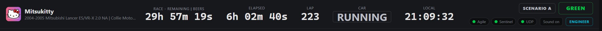
| Element | Meaning |
|---|---|
| Team and car | Team name, car number, car, track. Logo top-left. |
| Race - remaining | Race time remaining; before the start, time to the planned start. The label also names the session and the regulations. |
| Elapsed | Time since the green flag. |
| Lap / Car | Current lap and car state from the Agile geofences: RUNNING, PIT ENTRY, PITS, FUELLING, PIT EXIT. |
| Local | The laptop's clock. |
| SCENARIO | Which scenario is running (A unless you switch, or a branch such as B1). Amber when it is not A. Click it to open the scenarios. |
| Flag | Current track flag (set in Race control; mirrored to the Agile dash). |
| Agile / Sentinel / UDP | Device connection: green connected, amber connecting or stale data, red offline, dark disabled. |
| Sound on/off | Mutes the alert chime on this device. |
| ENGINEER / VIEW ONLY | What this device is allowed to do (section 3.3). |
A red or amber line under the status bar means the current call is critical or a warning. At the bottom of every page a footer shows the Mullaloo logo, the product name and version, and the credit line.
The whole race from green flag to chequered flag. Solid blocks are stints already driven (in driver colour); dashed blocks are planned stints. Lilac ticks are fuel stops, grey ticks other stops. The lilac bar under a planned fuel stop is its fuel window: the earliest to the latest time that stop can be made (hover it for the exact times and laps). The white line is now. Real flags are drawn along the top; a red flag shows as a red block where the car is parked. NEW
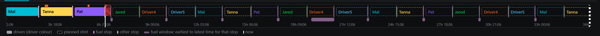
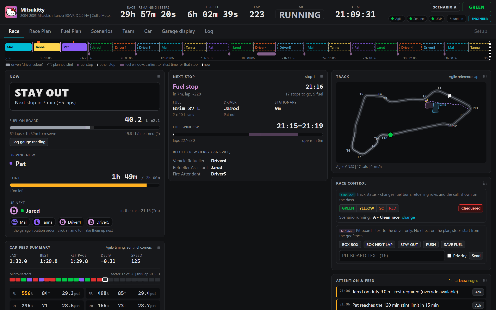
The overview. Three columns, each with one job: Now (left, with the Car feed summary under it), Next (centre), and on the right the Track map, Race control and Attention & feed. That is the default layout; you can move the cards.
Every card on the Race and Car tabs has a small grip (nine dots) at the right of its header. Press and hold it, then drag: the card lifts off the page and follows the pointer, a dashed outline shows where it will land, and the other cards slide out of the way as you move. You can drop a card at any position in any column; hold it near the top or bottom of the window and the page scrolls.
The layout is saved in that browser only, so the engineer's laptop, the garage screen and a tablet can each have their own. Cards that only appear during a stop (stop handshake, fuel stop, pit lane timers) come back where you last put them, or next to the card they normally sit beside, so a pit stop does not reshuffle your layout. Reset layout, at the bottom of the page, puts every card back.
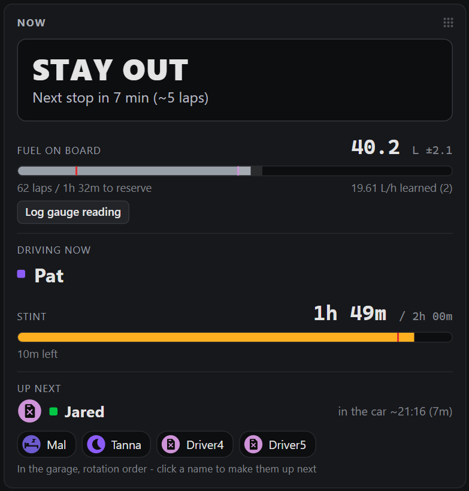
| Icon | Meaning |
|---|---|
| Steering wheel (cyan) | Driving |
| Jerry can (lilac) | Available, and on the refuel crew for the next fuel stop |
| Spanner (grey) | Available in the garage, ready for work on the car |
| Tick (green) | Available |
| Bed (purple) | Sleeping |
| Moon (violet) | Resting |
| Flag (orange) | On flag duty |
| Cross / red bar | Offline / unavailable |
From 5 minutes before the planned stop the call counts laps: BOX IN 3 LAPS, 2, 1. On the last lap it becomes NOTIFY DRIVER: BOX BOX with a notification and a one-click Send BOX BOX to the driver. Once sent, it reads BOX THIS LAP with the time sent and whether the driver has acknowledged.
+1 lap keeps the driver out one more lap. The called stop moves one lap later in the running plan and in every scenario; its fuel goes up by one lap's burn, the planned driver change is kept, and the log shows "stint extended +1 lap". Press it again for a further lap. The extension clears when the car next enters the pits. The button is disabled, with the reason in its tooltip, if the extra lap would bring the fuel below the reserve or the stint over the maximum.
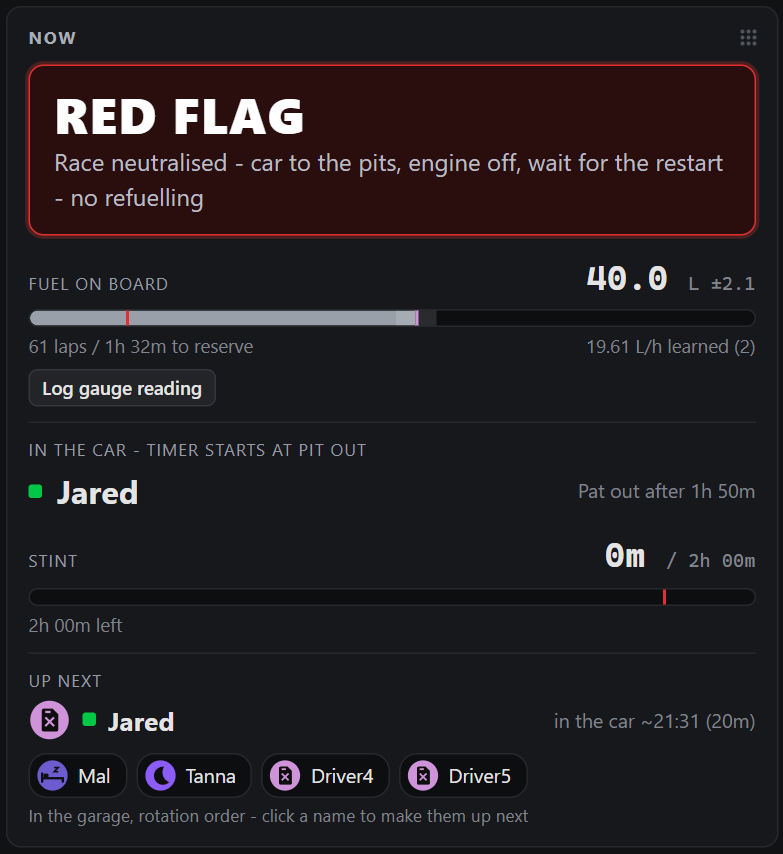
When the flag is RED the call reads RED FLAG - race neutralised, car to the pits, engine off, wait for the restart (and "no refuelling" where the rules forbid it). The plan holds the car in the pits from the red until the assumed restart (strategy.redExpectMin, 20 minutes by default; once that has passed, always at least 5 minutes more), with no fuel burn, no driving stint and no stop planned inside it; the next stint starts at the restart. The red pit visit is shown as a red stop: it never counts as a mandatory stop and no fuel or driver change from the plan is applied to it. When the flag goes back to green with the car still parked, the call reads RESTART.
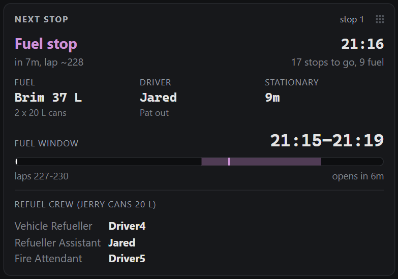
Everything about the next planned stop: type and clock time, time and laps to it, stops still to go, fuel to add (and cans), driver change, planned stationary time, the fuel window as a bar against now, and the refuel crew by name. Crew are assigned only from members tagged with that role and currently Available, and never the outgoing driver; the incoming driver is listed as Refueller Assistant (supervising) - see section 7.6. If nobody qualifies, the slot shows UNASSIGNED with the reason, who could help, and a FIX button that opens the Team tab at Fix the refuel crew with one-click fixes (wake a tagged person, or give an available person the missing role). Each fix is logged. When the Agile is offline, manual car state buttons appear here.
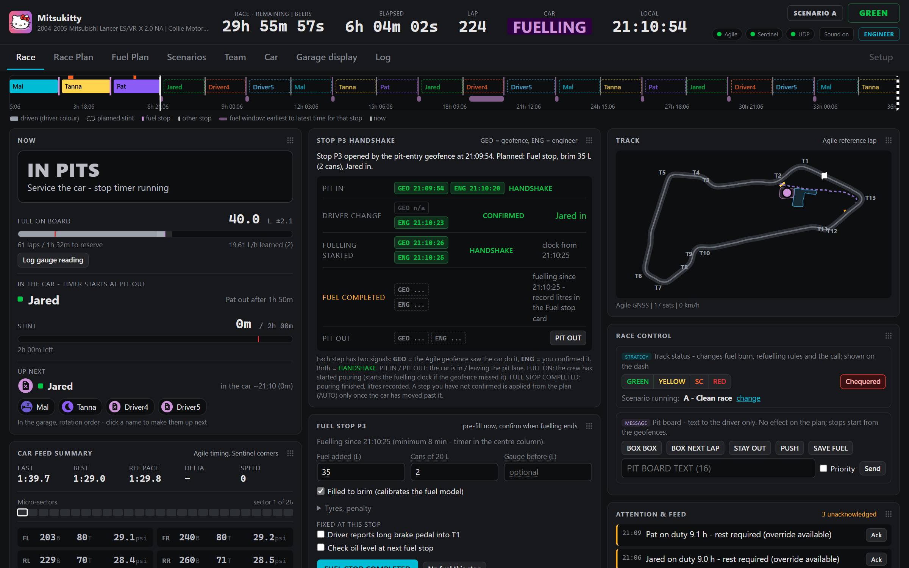
When a stop is due, or the Agile pit-entry geofence opens one, the centre column becomes the pit stop screen, top to bottom:
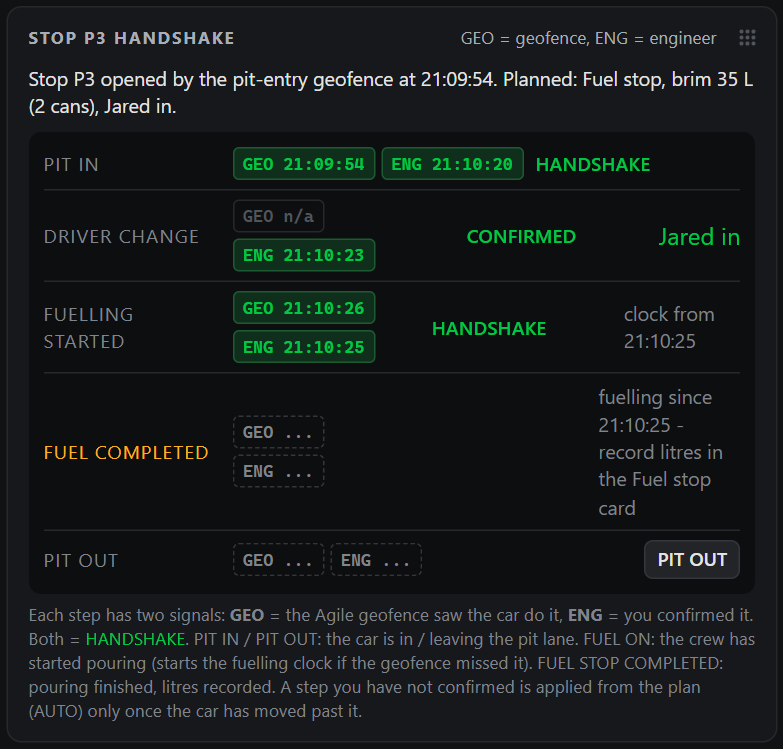
Every step has two signals. GEO means the Agile geofence saw the car do it; ENG means you confirmed it. Both together read HANDSHAKE. There are no countdowns: you press each step when you see it done.
| Step | GEO | ENG (what you press) |
|---|---|---|
| Pit in | pit-entry geofence | PIT IN: the car is in the pit lane. If the Agile missed the pit entry, this also opens the stop by hand. |
| Driver change | none | Choose who gets in (pre-selected from the plan) and press DRIVER CHANGE DONE. |
| Fuelling started | car in the fuel zone | FUEL ON: the crew is pouring. Starts the fuelling clock if the geofence missed it. |
| Fuel completed | car left the fuel zone | FUEL STOP COMPLETED in the Fuel stop card: litres and cans recorded. No fuel this stop for a driver-only stop. |
| Pit out | pit-exit geofence | PIT OUT: the car is leaving the pit lane. |
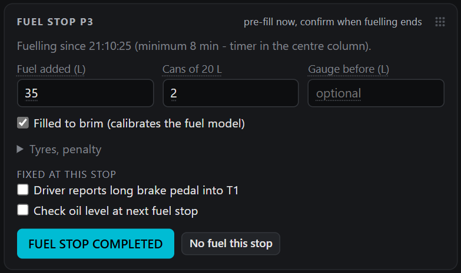
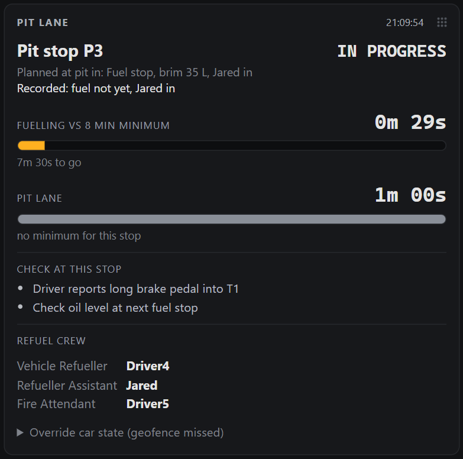
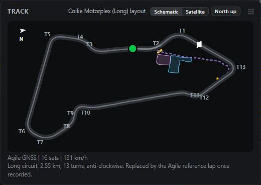
The track map shows the circuit with its turn numbers, the start/finish line and the pit zones; the dot is the car (coloured by car state, grey if the position is old) with a short trail. Until the Agile has recorded its own reference lap the outline comes from the track preset; after that the Agile's recorded lap is used, which is exact for the car's own GPS.
Preset aligned to the Agile lap NEW. When the Agile's lap arrives, Orb slides the preset onto it (a pure shift, no turning or stretching) and moves the preset turn numbers, pit lane, pits, fuel area and start/finish by the same amount. The line under the map says how far it moved and how well the shapes agree, for example aligned to the Agile lap: shifted 12 m SE, shapes agree within 2 m. If they do not match (another track, or the Agile somewhere else) the preset overlays are hidden and the line says why; the Agile's own geofences and start/finish are still drawn.
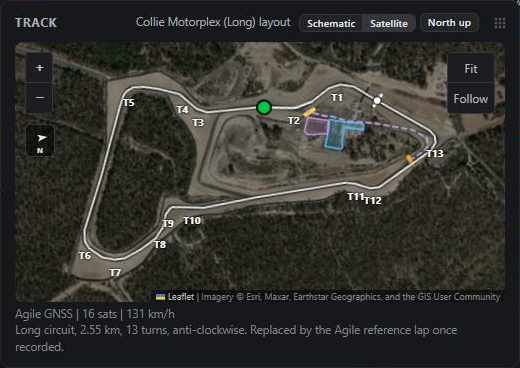
Schematic or Satellite NEW. The two buttons in the card header switch the view; each browser remembers its choice. Satellite draws the same circuit, geofences, turns, pits, start/finish, car and trail on darkened satellite imagery. + / - zoom, drag to pan, Fit shows the whole track again and Follow keeps the car centred. The imagery comes through the pit wall laptop, which fetches each piece once while it is online and keeps it (data\tiles); phones and tablets on the pit Wi-Fi get it from the laptop and need no internet of their own. Download the track before the weekend (section 5.13, Track map imagery). With no imagery at all (offline and not downloaded) the card shows the schematic with a note and tries again every minute.
Turned to fit, North up NEW. The card is wide and short, so a track that runs north-south is turned to the angle that draws it biggest (Collie: 82°, about twice the size). The north arrow in the corner turns with the map. North up in the card header, or a click on the arrow in the satellite view, puts north at the top again; each browser remembers it. A live trail with no outline is never turned.
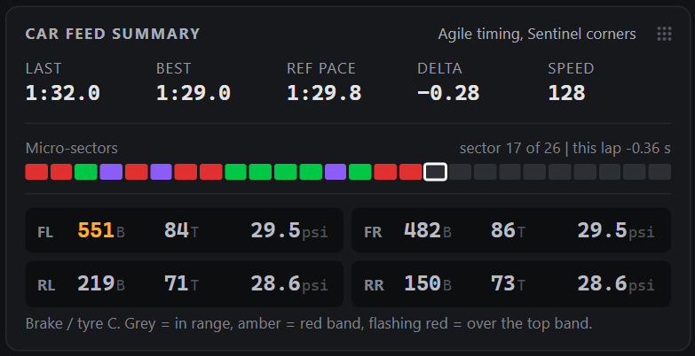
The Car feed summary gives last lap, best lap, reference pace (median of recent clean green laps), live delta and speed; the micro-sectors of the current lap (green faster, red slower, purple best, grey not yet run, white outline = the sector the car is in); and the four corners from the Sentinel: brake and tyre temperature and TPMS pressure. Corner values are grey when in range, amber in the Sentinel red band and flashing red above the top band.
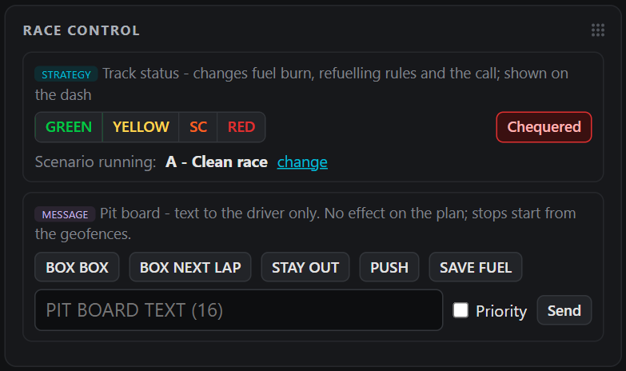
Before a session: choose the session, start fuel, starting driver and tyre set, and press Green flag - start session. During a session the panel has two clearly separated groups:
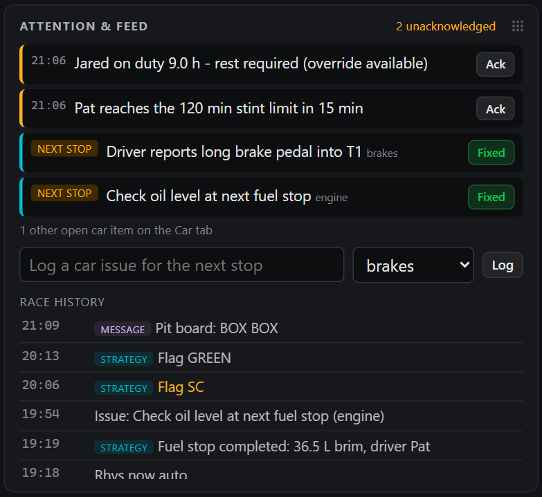
The top of the feed is what needs attention: unacknowledged warnings and critical alerts (press Ack) and jobs for the next stop (press Fixed when done). Log a car issue for the next stop adds a job; it appears at once on this card and on the Car tab. NEW Below is the Race history: flags, stops, pit board messages and acknowledgements, issues, penalties, crew status changes and acknowledged alerts, newest first, in a short window that scrolls inside its card. Alerts also pop up briefly in the bottom-right corner with a chime.
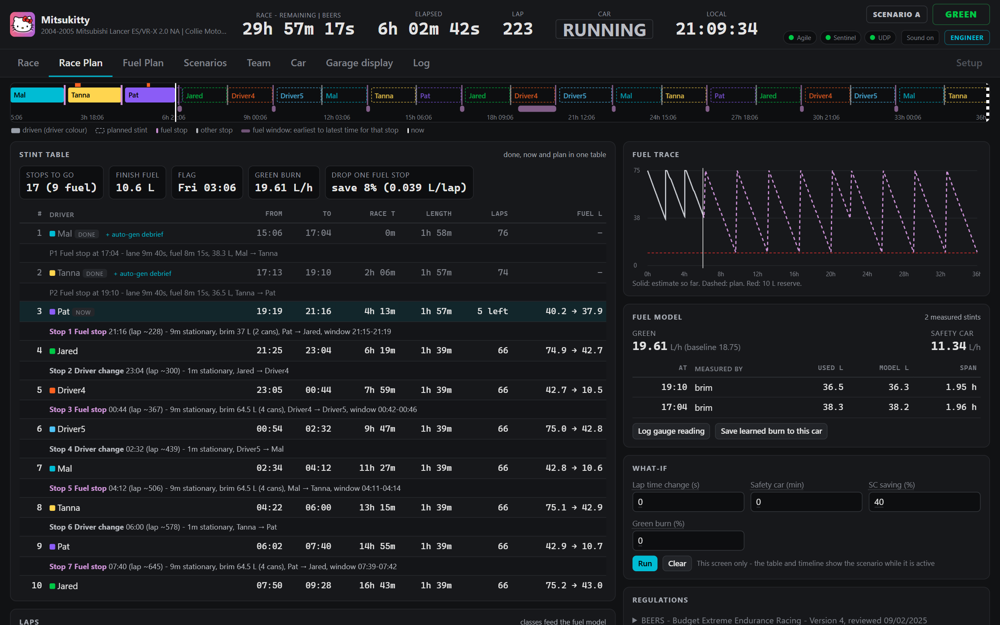
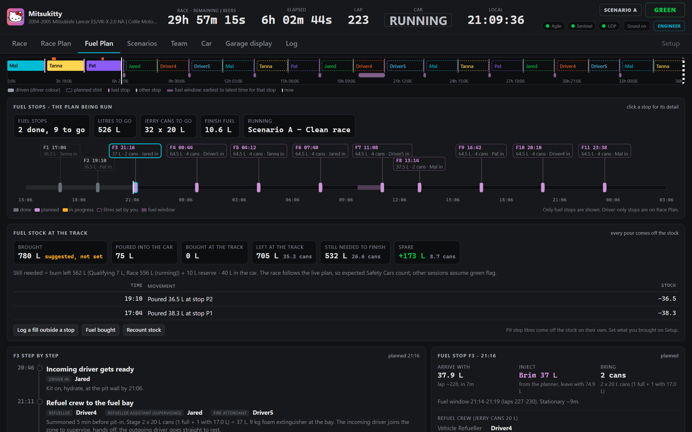
The Fuel Plan is the refuel crew's view of the race. It shows only the fuel stops of the plan being run (the running scenario); driver-only stops stay on Race Plan.
Timeline. Above it: fuel stops done and to go, litres to go, jerry cans to go, finish fuel and the scenario running. Each stop has a short label - number, time, litres, cans and the driver coming in - and a marker: grey done, lilac planned, amber in progress, dashed outline when you set its litres, with its fuel window underneath. Click a stop to select it.
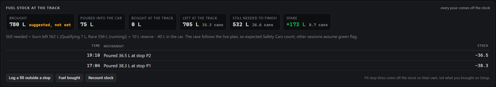
Tracks the fuel brought to the weekend:
The movements table lists every pour, purchase and recount. Buttons: Log a fill outside a stop (for example between sessions), Fuel bought (fuel bought at the track) and Recount stock (spills or part cans: sets the stock to what you count).
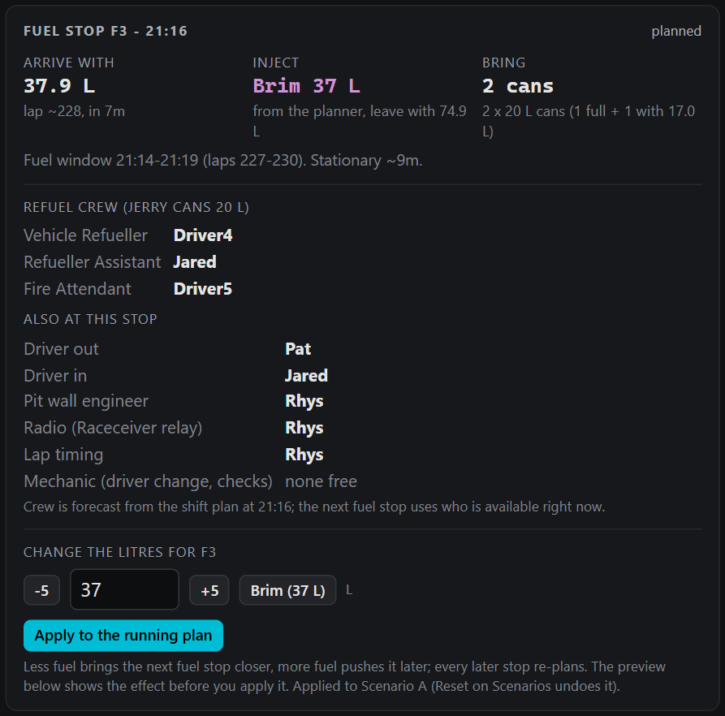
Crew for later stops is forecast from the shift plan at that time. The next stop uses whoever is available now.
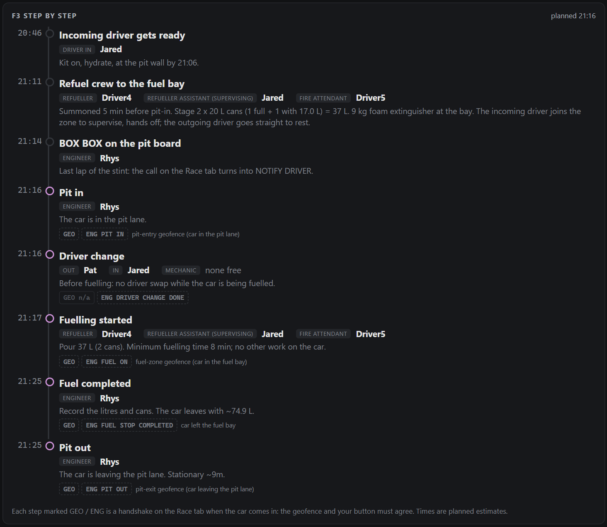
Step by step gives the procedure for that stop from the incoming driver getting ready and the refuel crew going to the bay (summoned 5 minutes before pit-in, cans and the 9 kg foam extinguisher staged) through BOX BOX, pit in, driver change, fuelling started, fuel completed and pit out, with planned times and names.
Change the litres of a stop with -5, +5, Brim or by typing. A preview shows where every later fuel stop moves, the fuel stop count and the finish fuel, before anything is changed. Apply to the running plan re-plans the running scenario with that amount (capped by the tank and the per-stop limit); Back to planner litres removes it. Applied changes can be undone with Undo on the Scenarios tab.
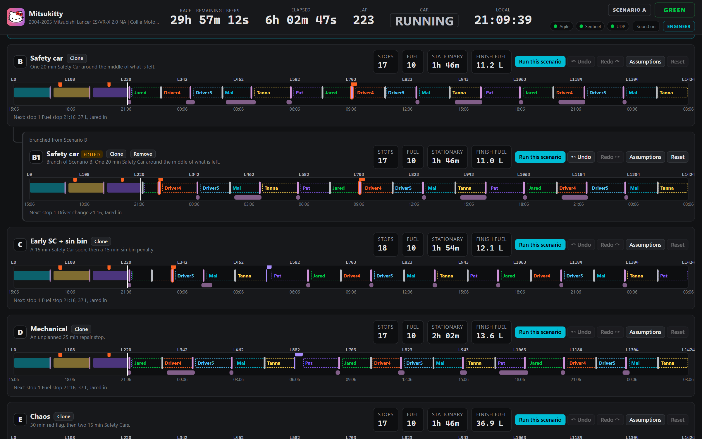
Six "what could happen" scenarios side by side. Each starts from a template created at the moment the scenarios are created; event times are then fixed until you move them.
| Scenario | Assumption |
|---|---|
| A - Clean race | No incidents: the plan as it stands. |
| B - Safety car | One 20 min Safety Car around the middle of what is left. |
| C - Early SC + sin bin | A 15 min Safety Car soon, then a 15 min sin bin penalty. |
| D - Mechanical | An unplanned 25 min repair stop. |
| E - Chaos | A 30 min red flag, then two 15 min Safety Cars. |
| F - Driver down | The up-next driver unavailable for the rest of the race. |
Each bar is the whole race. Above it, the estimated lap number; below it, the clock time. On the bar: driven stints dim, the plan from now in driver colours, stops as ticks (lilac = fuel), fuel windows underneath, and the scenario's events along the top (orange Safety Car, red Red flag, purple repair or sin bin). Chips give stops, fuel stops, total stationary time and finish fuel; warnings appear under the bar.
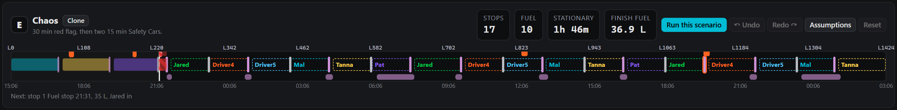
Every bar, and the Race timeline, show the same real past: Safety Cars, yellows and red flags as solid bars (a flag still out projected forward), a RED block in the driver lane for the time parked, and the stops really made. So the scenarios converge as the race goes on. A predicted Safety Car or red flag is used up when a real one of the same kind comes out after the scenario was made. A predicted event whose time passes without it happening slides forward to the next likely spot (evenly between now and the scenario's next event, or the flag; shown with a dashed outline), and is dropped once it no longer fits before the flag.
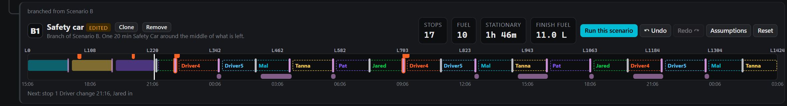
Clone, next to each scenario's name, copies the scenario as it is now into a branch drawn indented under its family: A1, A2 ... for A, B1 for B. A clone of A1 becomes the next A number. A branch is a full scenario: it can be run, edited, undone and compared side by side with the main line; Reset returns it to how it was when cloned. Remove deletes a branch that is not running.
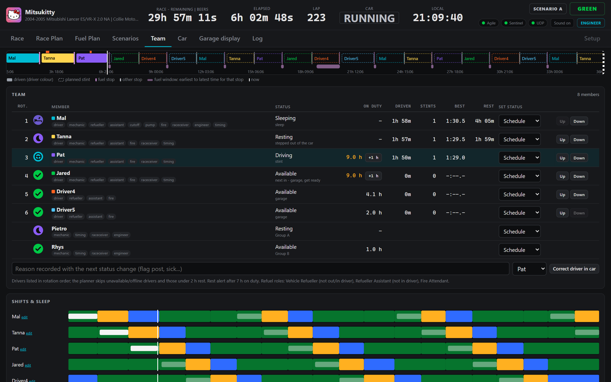
One table for every team member. Drivers come first in rotation order (Up/Down to change it); the planner follows this order, skipping drivers who are unavailable, offline or have not rested enough. For each member: presence icon, roles, status (with what the shift plan has them doing), hours on duty (amber when rest is due, +1 h to override for a contingency), and for drivers time driven, stints, best lap and time since their last stint.
| Status | Meaning |
|---|---|
| Available | On duty. Can be assigned to the refuel crew. |
| Driving | In the car (automatic). |
| Resting | On a break. Not assigned. The outgoing driver is set Resting automatically at pit in. |
| Sleeping | Asleep. Not assigned; FIX can wake them if a refuel role is empty. |
| Offline | Away from the track. |
| Flag duty | Marshalling at a flag point (enter the post in the reason box). |
| Unavailable | Sick, injured, or otherwise out; the planner removes a driver from the rotation. |
| Schedule | Follow the shift plan below (removes a manual status). |
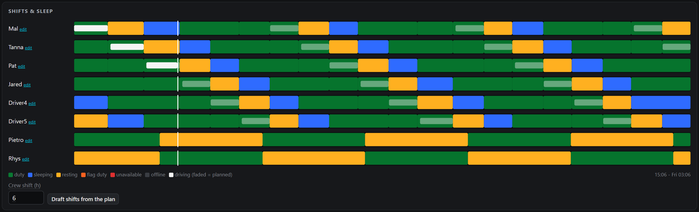
The Shifts & sleep chart shows each person's blocks over the race: green duty, amber resting, blue sleeping, orange flag duty, red unavailable, dark grey offline, white driving (faded = planned).
Draft shifts from the plan replaces every block with a complete rota built from the plan being run (it asks first). Drivers are rostered stint by stint: the driver in the car is driving and the next driver in is on duty in the garage getting ready; the driver who has just stepped out rests, and the one before sleeps (races of 12 hours or more); at least two drivers wait in the garage for mechanical work and the fuel crew; any extra drivers sleep. Other crew run in two alternating groups of the Crew shift length. The refuel crew for each planned fuel stop is on duty from 5 minutes before pit-in to pit-out, chosen from who is in the garage, so the plan does not wake anyone for a stop.
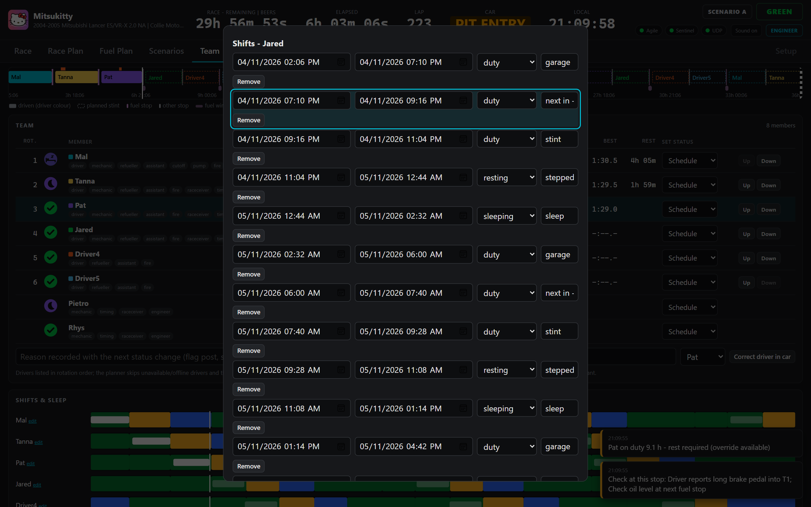
Click edit next to a name to open that person's blocks: start, end, kind and note for each, with Remove, Add block and Save. The block happening right now is outlined in cyan and the editor scrolls straight to it.
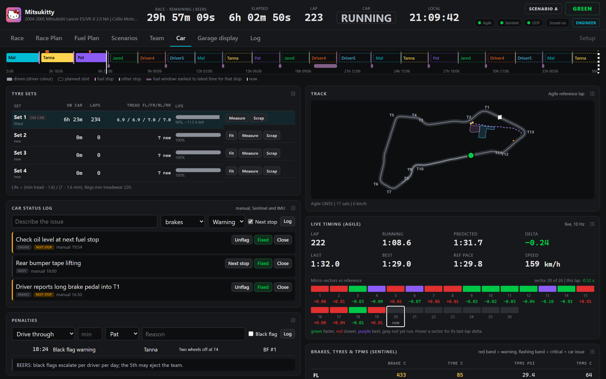
Left column: Tyre sets (time on the car, laps, last tread measurement and life bar; Fit, Measure, Scrap), Car status log (every issue, manual or automatic, with category, severity, whether to deal with it at the next stop, and its history; Next stop/Unflag, Fixed, Close) and Penalties (drive-through, stop-and-go, sin bin, black-flag warnings and time penalties per driver; black flags counted per driver per day for the BEERS escalation).
Right column: Track (the same live map as on the Race tab), Live timing (Agile) and Brakes, tyres & TPMS (Sentinel) with the device's own colour bands, thresholds and alarm history. The cards can be moved as on the Race tab.
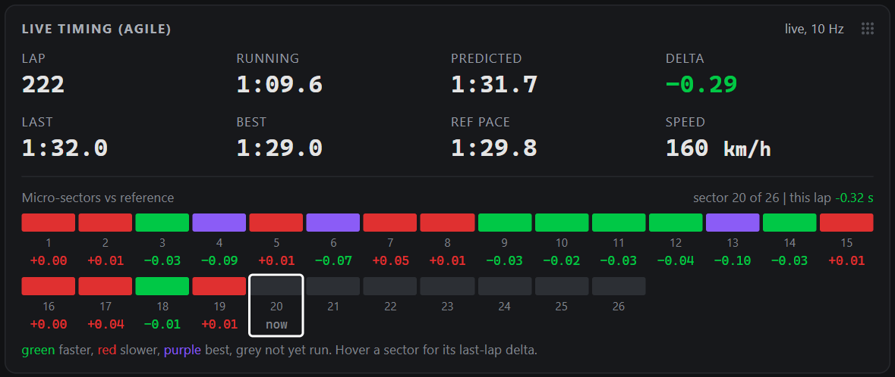
Live timing shows lap number, running lap time, predicted lap, delta, last, best, reference pace and speed, updated live at 10 Hz. The micro-sector grid shows every sector of the Agile's reference lap with its colour (green faster, red slower, purple best, grey not yet run), its number and its delta for the current lap; the sector the car is in is outlined. In the pit lane there is no live delta and sectors before pit exit stay grey.
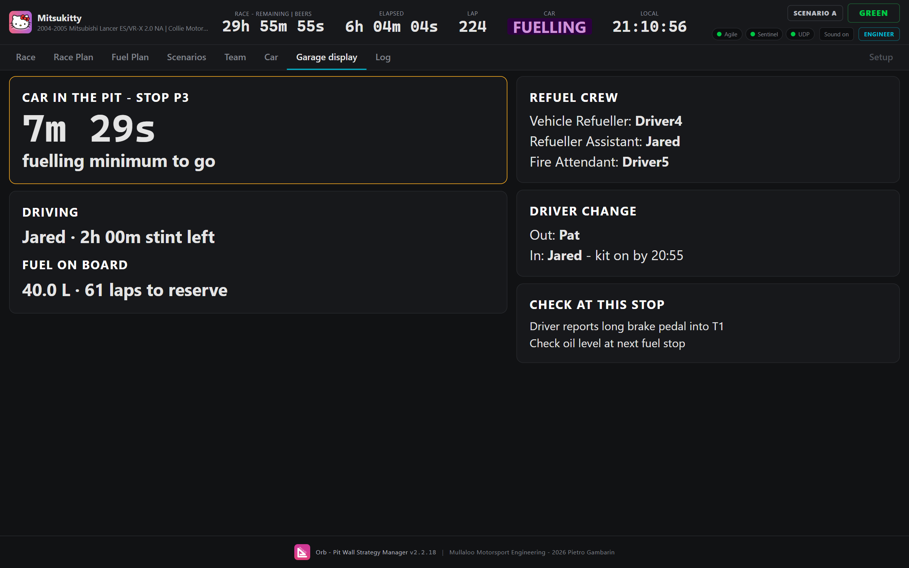
A big-type screen for the crew, meant for a TV or tablet in the garage. Between stops it shows the countdown to the next stop, its type and fuel, the driver and fuel on board. When the car is in, it shows the fuelling minimum counting down. Alongside: the refuel crew by name, the driver change (with the time to have kit on), the jobs to check at this stop, and a warning when refuelling is closed by the flag. An unassigned refuel role shows a FIX button on the engineer's screen.
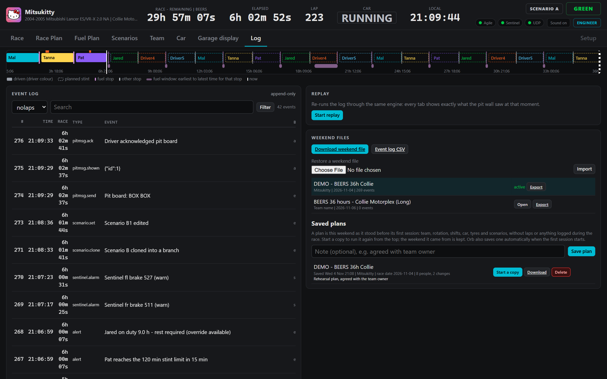
.orb.json: setup and complete log), the event log as CSV, restore (import) a weekend file (old .pitwall.json files import too), and open other weekends.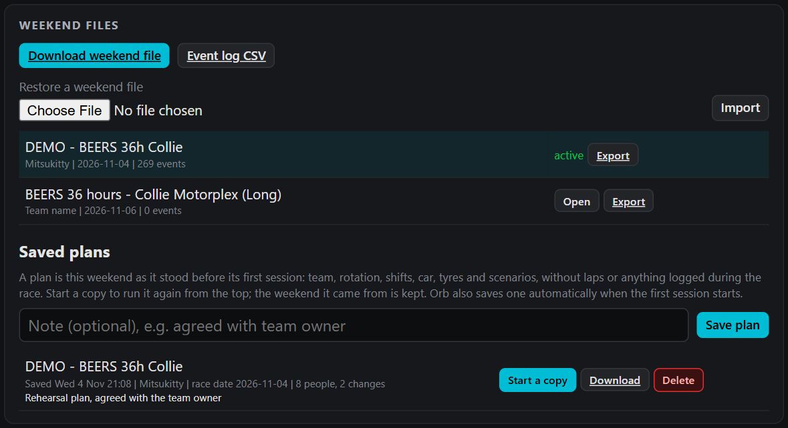
Prepare a weekend days early and start it fresh on race day. Save plan stores the open weekend as it stood before its first session - team, rotation, shifts, car, tyres and scenarios, but no laps, alerts, device data or anything logged during a run - in data\plans\ as <date>_<time>_<name>.orb.json, with an optional note. Each plan offers:
data\plans\deleted\.Orb also saves a plan automatically (..._auto.orb.json) the moment a weekend's first session starts. Plans are also offered on the New race weekend screen.
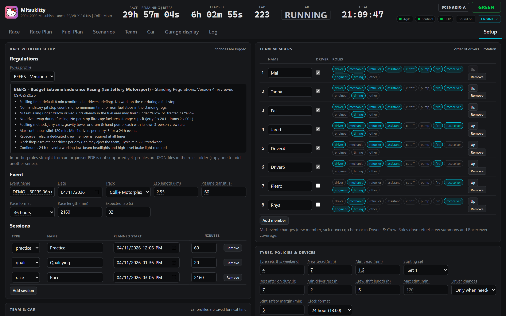
Opened from Setup at the right of the tab bar. On the first start it is the only screen, and it creates the race weekend. Later it edits the weekend; every change is logged. Every field has a tooltip: what it is, and what raising or lowering it does.
| Section | Fields |
|---|---|
| Regulations | Rules profile (B4B Events or BEERS) with its version and key rules. |
| Event | Name, date, track (the Collie Motorplex preset includes the long-circuit outline and turn numbers), lap length (distance races), pit lane transit time, race format (7 h, 12 h, 24 h, 36 h, 1000 km, custom), race length, expected lap time. |
| Sessions | Practice, qualifying, race (and more) with planned start and length. |
| Team & car | Team name, number; car profile from the library; tank sizes and unusable fuel; reserve floor; Tank sizes confirmed; baseline green and Safety Car burn for this track; refuel method; pour rate; driver change time; save car to library. |
| Fuel stock for the weekend NEW | Safety margin on the burn (%, default 10), fuel in the car on arrival, and Fuel we bring. The suggestion: every session at the green-flag burn, plus the margin and the reserve, less the fuel already in the car, rounded up to whole cans, with the sum spelled out. Use the suggestion fills it in. |
| Team members | Name, driver yes/no, roles (driver, mechanic, refueller, assistant, cutoff, pump, fire, raceceiver, engineer, timing, other). Drivers' order is the rotation. |
| Tyres, policies & devices | Tyre sets, new and minimum tread; rest after hours on duty; minimum driver rest; crew shift length; max stint; when to change drivers; stint safety margin; fill to brim; clock format; Agile, Sentinel and UDP addresses. |
| Branding | The Mullaloo Motorsport Engineering logo is built in; upload a PNG/SVG only to replace it, Use default logo to go back. |
| Track map imagery NEW | Engineer only. Download track tiles stores the satellite imagery of the track and 400 m around it (the Agile's lap if there is one, else the track preset, else around the car's last position), from zoom 14 up to the best the provider has there, and reports progress, then Ready offline. Tile URL, attribution and max zoom set the imagery source (Esri World Imagery by default; Use the default source goes back). Check the provider's terms of use for your team. Where the provider has no imagery that close (at Collie, above zoom 18), the map uses its closest real zoom. |
| Checks | Warnings before you race: too few drivers for the format, tank over the regulation maximum, tank sizes not confirmed, refuel roles nobody holds, no Raceceiver relay (BEERS), headlights for 24 h+ races. |
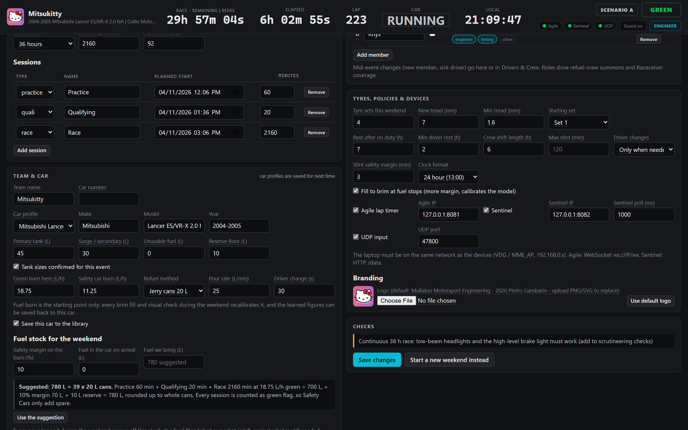
The Collie Motorplex preset is the long circuit: 2.55 km, 13 turns, run anti-clockwise, start/finish on the straight between T13 and T1. NEW From 2.2.22 the centreline is the median of 11 laps of Sentinel GNSS (10 Hz, 12-16 satellites) recorded at the 26 April 2026 Collie test: 2.543 km, and the laps agree within about 1.3 m. It lies on the asphalt in satellite imagery. The turn numbers, pit lane, pits area, fuel area, pit entry and exit lines and the start/finish line come from the earlier traced layout and the team's mark-ups of the pit complex, turned onto the GNSS line (the shapes agree within 2.3 m); the turns and start/finish sit on the line. The pit geometry is good to about 5-8 m. The pit lane is about 460 m from entry to exit and runs alongside the start/finish straight; the pits area comes before the fuel area, then the exit.
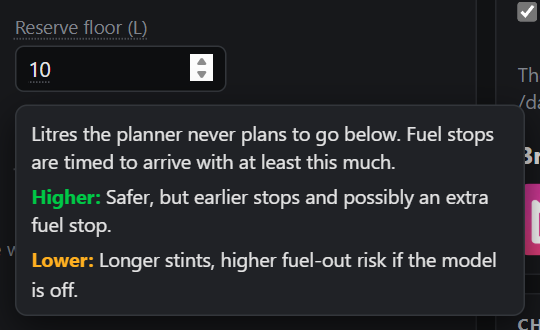
The map uses the preset until the Agile has recorded its own reference lap, then the Agile's lap (exact for the car's GPS). Turn numbers, the pit lane and the start/finish line are moved onto the Agile's lap (section 5.5) and stay on the map whenever they line up with it. At the track the Agile's recorded lap and its stored geofences are what the app uses.
refueller, assistant and fire. The outgoing driver is never on the crew and the incoming driver takes the assistant role (supervising), so tag at least three or four people with each fuel role; for BEERS also raceceiver.Join the laptop to the car network (VDG / MME_AP, 192.168.0.x). Read the IP addresses on the Agile and Sentinel screens and enter them in Setup - Tyres, policies & devices, then Save changes. Starting from the demo weekend, these are the fields to change:
| Description | Current setting | Target setting |
|---|---|---|
| Agile lap timer | ticked | no change |
| Agile IP | 127.0.0.1:8081 (simulator) | IP shown on the Agile screen, e.g. 192.168.0.41 |
| Sentinel | ticked | no change |
| Sentinel IP | 127.0.0.1:8082 (simulator) | IP shown on the Sentinel screen, e.g. 192.168.0.40 |
| Sentinel poll (ms) | 1000 | no change |
| UDP input / port | ticked / 47800 | no change |
The Agile and Sentinel lights turn green within seconds. The track map appears once the Agile has recorded its reference lap. Close the simulator if it is still running.
In Race control select the session, enter the actual fuel in the car, the starting driver and the tyre set, and press Green flag - start session when the session goes green. Practice and qualifying are recorded too: their laps and fuel measurements help the model before the race, and the fuel they use comes off the stock. Orb saves an automatic plan when the weekend's first session starts.
| Moment | What happens | Engineer action |
|---|---|---|
| Stop near | From 5 min before the planned stop the call counts laps: BOX IN 3 LAPS, 2, 1. On the last lap: NOTIFY DRIVER: BOX BOX. Refuel crew summoned 5 min before pit-in; the incoming driver joins them in the fuel zone. | Press Send BOX BOX to the driver. To keep the car out, press +1 lap instead. |
| Pit entry | PIT ENTRY geofence opens the stop (GEO); the handshake card appears; pit lane timer starts. The outgoing driver is set Resting. | PIT IN (or Not a stop). Brief the crew from "Check at this stop". |
| Driver out | Outgoing driver leaves the car before fuelling and goes straight to rest. | Check the driver row, DRIVER CHANGE DONE. |
| Fuelling | Fuel bay geofence (GEO): fuelling timer against the minimum. The incoming driver supervises, hands off. | FUEL ON when pouring starts. Fill in the Fuel stop card. |
| Fuel done | Car leaves the fuel zone (GEO). The litres come off the fuel stock. | FUEL STOP COMPLETED. |
| Pit exit | PIT EXIT geofence: stop closed and checked; plan recalculated. Anything not confirmed is applied from the plan (AUTO). | PIT OUT, then check the new next stop. |
| Red flag in the stop NEW | No fuelling or service under red; the stop waits where it is. | Wait for GREEN, then carry on from the same step. |
Press Chequered. In Race Plan - Fuel model, press Save learned burn to this car to keep the measured consumption for the next event at this track. Read the stint debriefs. In Log download the weekend file and the CSV for the debrief, and back up the data folder.
Burn starts from the car's baseline for the track (green and Safety Car litres per hour). Every lap is classified by its time against the live reference pace: push, green, slow, Safety Car or pit lap; stationary time in the pits burns nothing. Each brim fill or gauge reading is a measurement of the fuel actually used since the previous one; a regression then refits the green and Safety Car rates, with the baseline as a starting point. A stint that used more than 10% more or less than predicted raises an alert. The estimate shows its uncertainty, which grows with time since the last measurement.
From the current moment to the flag, the planner searches the number of stops, how many of them are fuel stops and where they fall, and picks the plan with the least total time stationary while respecting:
On long races with short fuel range (for example the BEERS 36 h), this typically alternates driver-only stops with fuel stops, which saves a large amount of stationary time.
A live red flag neutralises the race: from the red until the assumed restart (strategy.redExpectMin, 20 min; once that has passed, always at least 5 minutes away) the car is parked in the pits, nothing burns, no stint is driven and no stop is planned. The red pit visit never counts as a mandatory stop and gets no automatic fuel or driver change from the plan. The driver's continuous time pauses.
A scenario is the planner plus assumptions. Safety Car windows lower the burn rate (and a stop due within 45 minutes is taken under the Safety Car), assumed red flags stop the burn, repair stops and sin bins are forced stops of fixed length, and unavailable drivers are removed from the rotation. All scenarios share the real past (real flags, the red park block and the stops made). A predicted Safety Car or red is consumed by a real one of the same kind; one that does not happen moves forward to the next likely spot, or is dropped if it no longer fits before the flag.
Stops you drag are pinned: the planner keeps them where you put them, with their fuel and driver choice, and searches the best plan only for the time after the last pinned stop. Litres set on the Fuel Plan are kept the same way. Every change is recorded with an undo history per scenario (up to 50 steps).
A fuel window opens at the earliest time the car could stop, fill up and still reach the next fuel stop (or the flag), and closes at the latest time before the reserve floor or the stint limit. The call is recalculated every second from the plan, the fuel estimate, the stint time and the flag; Appendix B lists every call.
A driver's continuous time stops when the car stops in the pits. Once the driver change is confirmed, the Now column shows the new driver as "In the car - timer starts at pit out", with the outgoing driver's final time beside it. While the car is in the pits no stint-limit or fuel-window alerts are raised. A driver who stays in the car through a stop keeps counting from where it paused.
+1 lap holds the called stop one reference lap later in the running plan and every scenario. It is allowed only if the fuel on arrival stays at or above the reserve floor and the stint stays within the maximum. The stop's fuel grows by one lap's burn; the planned driver change is kept. The extension ends when the car next enters the pits.
Suggested stock = (sum over sessions of length x green-flag burn) x (1 + margin) + reserve - fuel in the car on arrival, rounded up to whole cans. Live: left = brought + bought - poured (pit stops, fills outside a stop), or the last recount adjusted since. Still needed = burn for every remaining session (race from the live plan) + reserve - fuel in the car. Spare = left - still needed.
| Rule | B4B Events (Mar 2026 + 7 h supplementary) | BEERS (Standing Regulations V4, 09/02/2025) |
|---|---|---|
| Fuel stop minimum | 5 min | 8 min (confirmed at the briefing) |
| Mandatory stops | 5 stops of at least 5 min | None |
| Fuel per stop | Max 80 L | Limited by fuel-area storage (jerry cans 5 x 20 L, drums 2 x 60 L) |
| Refuelling under Safety Car | Allowed | Not allowed (treated as Yellow) |
| Refuelling under Red | Not allowed | Not allowed |
| Max continuous stint | 120 min | 120 min |
| Drivers | 3 to 6 | Min 4, min 5 for 24 h+ |
| Other | Contact = 15 min sin bin | Raceceiver relay required at all times; black flags escalate per driver per day; headlights for 24 h+; no driver swap during fuelling |
Profiles are JSON files in the rules folder. Importing directly from an organiser's PDF is not supported.
| Device | Connection | Used for |
|---|---|---|
| Agile lap timer | WebSocket to ws://AGILE-IP/ws (10 Hz live data, flag state, pit board shown / acknowledged); HTTP /data (completed lap time, position at 2 Hz), /refpath, /geozones, /sf/get | Laps, live timing and micro-sectors, car state from geofences (stop timers and the GEO half of the handshake), position and track map, pit board messages and driver acknowledgements, flags shown on the dash |
| Sentinel with CIRTS sensors | HTTP /data polled every second, /config for thresholds | Brake and tyre temperatures, TPMS, alarms; GPS position as a fallback for the map |
| Other devices | JSON over UDP, port 47800 | Simulator, future devices (e.g. an IMU impact sensor) |
UDP messages are one JSON object per datagram:
{"t":"lap","n":12,"ms":91234,"pitted":false} {"t":"carstate","cs":"PITS"}
{"t":"flag","flag":"SC"} {"t":"fuel","litres":32.5}
{"t":"impact","g":4.2,"lat":-33.36,"lon":116.15}
{"t":"issue","cat":"engine","sev":"warn","text":"Oil temp high"}
Sentinel alarms: a value in the Sentinel red band is logged as a warning; above the top (flashing) band it is critical and automatically creates a car issue flagged for the next stop. Each alarm level repeats at most every 5 minutes per corner.
| Path (inside the data folder) | Content |
|---|---|
settings.json | Port, engineer hosts, last weekend (resumed automatically), satellite imagery source |
cars\ | Car library with learned fuel profiles per track |
events\<id>\config.json | The weekend as created |
events\<id>\events.jsonl | Every change, one line each: the race log and replay source (scenario undo history and fuel stock movements included) |
events\<id>\car_config.json, driver_schedule.json | Readable snapshots |
plans\<date>_<time>_<name>.orb.json NEW | Saved plans (and _auto plans saved at the first session) |
plans\deleted\ NEW | Plans you deleted |
branding\ | Your logo |
tiles\ NEW | Satellite imagery cache for the Track map, one folder per imagery source. Safe to delete; download it again before the weekend. |
ORB_DATA (PITWALL_DATA still works).| Symptom | Cause and fix |
|---|---|
| Console window closes immediately | Node.js is not installed or too old. Install Node.js 18+ (LTS). |
| "Reconnecting to Orb server" banner | The server stopped or the network dropped. Restart start-orb.bat; the weekend resumes. |
Old or mixed-up weekend after a restart, or EADDRINUSE | An earlier server is still running in the background. Double-click stop-orb.bat, then start-orb.bat. |
| Other devices cannot open the page | Firewall blocked Node.js (allow on Private networks), wrong address (use the one printed in the console), or devices on a different network. |
| VIEW ONLY on the laptop | You opened it via its network address. Use http://localhost:8080 on the host. |
| Cards are in odd places or a card seems missing | The cards were rearranged in this browser. Press Reset layout at the bottom of the Race or Car tab. A card that only shows during a stop appears again at the next stop. |
| Race tab columns stacked | The window is narrower than 1400 px. Maximise the browser or zoom out (Ctrl and minus). |
| Agile or Sentinel light red | Wrong IP, laptop not on the car network, or device off. Check the IP on the device screen and in Setup. |
| Agile amber ("stale") | Connected but no live data for 3 s: weak Wi-Fi or the device is busy. |
| No track map / no micro-sectors | The Agile has no reference lap yet; it records one after the first clean lap. The live trail is drawn meanwhile. |
| Satellite view shows the schematic with "No satellite imagery here" NEW | The laptop is offline and this area was not downloaded. When online, press Setup - Track map imagery - Download track tiles until it reads Ready offline. |
| The map says the preset "does not match the Agile lap" NEW | The Agile's lap is a different track, or the Agile is somewhere else (a test away from the circuit). The Agile's own lap and geofences are still drawn; only the preset's turns, pits and start/finish are hidden. |
| The map is sideways NEW | It is turned to fill the card; the arrow shows north. Press North up in the card header for north at the top. |
| Handshake step stays amber | The geofence saw the step and you have not confirmed it. Press the step's button, or leave it: it becomes AUTO once the car moves on. |
| +1 lap greyed out | The extra lap would bring the fuel below the reserve or the stint over the maximum; the tooltip gives the reason. |
| Refuel crew UNASSIGNED | Nobody is tagged with that role, or everyone tagged is resting, sleeping, offline, driving or barred by the rules. Press FIX, or tag more people in Setup. |
| Fuel estimate drifting | No measurement for a long time. Log a gauge reading or tick Filled to brim at the next fuel stop. |
| Fuel stock "suggested, not set" or red NEW | Set what you bring in Setup - Fuel stock for the weekend; log purchases with Fuel bought and spills or part cans with Recount stock. |
| A scenario change was a mistake NEW | Press Undo on that scenario (Redo puts it back), or Reset to the original. |
| Call says RESTART NEW | The red flag is over and the car is still parked: send it out. |
| Demo times look wrong | Restart Orb (stop-orb.bat, then start-orb.bat): the demo resumes from its last lap. To start it over, run make-demo.bat. |
| Simulator: "address in use" | Another simulator is still running. Close it, or start with --agile / --sentinel on other ports and update Setup. |
| Changes not accepted | Replay is active (press Back to live) or the device is view-only. |
clock.stopsOnRed).strategy.redExpectMin) until the flag actually goes green.When something is wrong or unclear, open an issue at github.com/redc6t/Orb/issues or send the following. The weekend file and the CSV let the problem be replayed exactly.
Orb - Pit Wall Strategy Manager v2.2.23 - test report Tester: Date / time of the problem (laptop clock): Weekend: demo / real (name): Screen and panel: What I did: What I expected: What happened: Screenshot: attached Weekend file (.orb.json) and event log CSV: attached (Log tab - Weekend files)
Useful things to test: the full pit stop handshake, confirmed and unconfirmed; +1 lap on the last lap; a red flag during a fuel stop and the restart; scenario Undo/Redo and branches; the fuel stock through a whole race, with a purchase and a recount; saving a plan and starting a copy of it; changing the litres of a fuel stop; a driver marked Unavailable mid-race; drafting shifts and checking who is called for each fuel stop; a Safety Car under both rule sets; restarting the server mid-race; two or three viewing devices at once; a long run with the simulator.
Security problems: report privately as described in SECURITY.md. Accessibility barriers: see ACCESSIBILITY.md.
| Term | Meaning |
|---|---|
| Agile | The MME GPS lap timer and pit board display in the car (was PLTD). |
| Branch | A scenario cloned from another (A1, B1 ...), to try a change and compare. |
| Brim fill | Filling the tank until full. Gives an exact measurement of fuel used. |
| Call | The single instruction shown at the top of the Now column. |
| CIRTS | The CAN infrared temperature sensor node at each corner of the Sentinel network. |
| ENG | The engineer's half of a stop handshake: the step's button was pressed. |
| Fuel stock | The fuel the team has at the track, in litres and cans. |
| Fuel window | Earliest to latest time a fuel stop can be made without breaking fuel or stint limits. |
| GEO | The geofence half of a stop handshake: the Agile saw the car do the step. |
| Geofence | A zone stored in the Agile (pit entry line, pits, fuel bay, pit exit line); crossing it changes the car state. |
| Handshake | A stop step confirmed by both the geofence (GEO) and the engineer (ENG). |
| Mandatory stop | A stop the regulations require (B4B: at least 5 stops of at least 5 minutes). |
| Micro-sector | One of the short sections the Agile splits its reference lap into; each is timed against the reference. |
| Plan (saved) | A weekend as it stood before its first session, stored to start fresh copies from. |
| Raceceiver | Race-control radio receiver; BEERS requires a crew member relaying it at all times. |
| Red park block | The time the car is held in the pits under a red flag, drawn in red on the timeline and scenarios. |
| Reference pace | Median of recent clean green laps. |
| Reserve floor | Fuel the plan never goes below. |
| Sentinel | The MME brake and tyre temperature and pressure monitor (was BTTM). |
| Stint | Continuous time one driver spends driving. |
| Stint extension | +1 lap: the called stop moved one lap later by the engineer. |
| Stationary time | Time the car is stopped in the box. |
| Up next | The next driver to get in the car. |
| What-if | A scenario calculated on screen only; never saved. |
| Call | When |
|---|---|
| PRE-RACE | Race not started; the plan is built from the planned start. |
| PRACTICE / QUALIFYING | A non-race session is shown. |
| STAY OUT | Normal running; shows minutes and laps to the next stop. |
| WINDOW OPEN | The next fuel stop's window is open; shows when it closes. |
| BOX IN N LAPS | Less than 5 minutes left to the planned stop: laps to go. |
| NOTIFY DRIVER: BOX BOX | The planned stop is at the end of this lap and the driver has not been told yet. Send BOX BOX, or press +1 lap. |
| BOX THIS LAP (amber) | Last lap, BOX BOX already sent; shows when it was sent and whether the driver acknowledged. |
| BOX THIS LAP (red) | Fuel at reserve, or the driver at the stint limit. |
| BOX NOW (caution) | Yellow / Safety Car and a stop is near: stopping under caution loses less time (only where refuelling is allowed under that flag). |
| STAY OUT - refuelling closed | A fuel stop is near but the flag forbids refuelling. |
| IN PITS | The car is in the pit lane. |
| RED FLAG | Race neutralised - car to the pits, engine off, wait for the restart (no refuelling where the rules forbid it). |
| RESTART NEW | Red flag over, car still parked: send it out for the restart. |
| CHEQUERED | Race finished. |
| Alert | Level | Action |
|---|---|---|
| Notify driver to BOX BOX | Warning | Send BOX BOX on the pit board. |
| Fuel at reserve | Critical | Box this lap. |
| Projected finish / stop below reserve | Critical | Review the plan; consider saving fuel or an extra stop. |
| Consumption +/-N% vs model | Warning / critical | The model has recalibrated; check the new plan. |
| Fuel window OPEN / closes in 5 min | Warning / critical | Prepare or make the fuel stop. |
| Refuel crew to the fuel bay | Warning (critical if a role is unassigned) | Crew to the fuel bay; fix any UNASSIGNED role. |
| Refuelling CLOSED under flag | Warning | Hold the fuel stop until the flag allows it. |
| Fuel stock tight (under one can spare) / SHORT NEW | Warning / critical | Buy fuel, recount, or plan to save fuel. |
| Driver reaches stint limit in 30 / 15 / 5 min; over max stint | Info / warning / critical | Plan the driver change. |
| Prepare (next driver) at 30 / 15 min | Info / warning | Next driver: kit on, hydrate, ready. |
| On duty N h - rest required | Warning | Send the person to rest, or override for 1 h. |
| No Raceceiver relay on duty (BEERS) | Critical | Put a raceceiver-tagged member on duty. |
| Check at this stop | Warning | Jobs listed for the stop in progress. |
| Sentinel brake / tyre alarm | Warning / critical | Critical creates a car issue for the next stop. |
| Stop fuel time under the minimum | Critical | Possible penalty: inform the team manager. |
| Stop does NOT count toward mandatory stops (B4B) | Warning | Another stop of the minimum length is needed. |
| Version | Change |
|---|---|
| 2.2.23 | Track map turned to fit the card; north arrow and North up. |
| 2.2.22 | Collie layout rebuilt from real GNSS laps. |
| 2.2.21 | Satellite track map with an offline tile cache; Download track tiles. |
| 2.2.20 | Preset turns, pits and S/F aligned to the Agile lap; simulator --gpsShift. |
| 2.2.19 | Manual rebuilt for Orb; source kept in docs/manual/; fresh screenshots. |
| 2.2.18 | Shifts editor highlights the current block. |
| 2.2.17 | Simulator: red flag freezes a stop; realistic brake/tyre cooling; real Agile deltas and micro-sectors. |
| 2.2.16 | Scenario Undo/Redo; Clone into branches; Save assumptions fix. |
| 2.2.15 | Red flag neutralises the race; scenarios follow what really happens. |
| 2.2.14 | Fuel stock: suggested amount and live stock vs needed. |
| 2.2.13 | Saved plans. |
| 2.2.12 | Car issues logged from the Race tab show up at once. |
| 2.2.11 | Demo resumes from its last lap; old pitwall scripts removed. |
| 2.2.10 | Renamed Orb - Pit Wall Strategy Manager. |
| 2.2.9 | PLTD renamed Agile, BTTM renamed Sentinel. |
| 2.2.8 | Simulator: repeated BOX no longer delays the stop. |
| 2.2.7 | Stint debriefs on the Race Plan. |
| 2.2.6 | Stop script for stale servers. |
| 2.2.5 | Movable cards on the Race and Car tabs. |
| 2.2.4 | README tour and community files. |
| 2.2.0 - 2.2.3 | Fuel Plan tab, stop handshake, +1 lap, shift draft, larger text, Car tab live map and timing. |
| 2.1.x | Draggable scenarios, lap countdown call, stop gates, Collie preset. |
| 2.0 | UI redesign following ISA-101 practice. |
Orb is free and open source software, released under the GNU General Public License v3.0. Designed and developed by Pietro Gambarin, Mullaloo Motorsport Engineering. The satellite map uses Leaflet 1.9.4 (BSD-2-Clause) and leaflet-rotate 0.2.8 (GPL-3.0), bundled in public/vendor/ with their licences; the default imagery is Esri World Imagery, credited on the map.